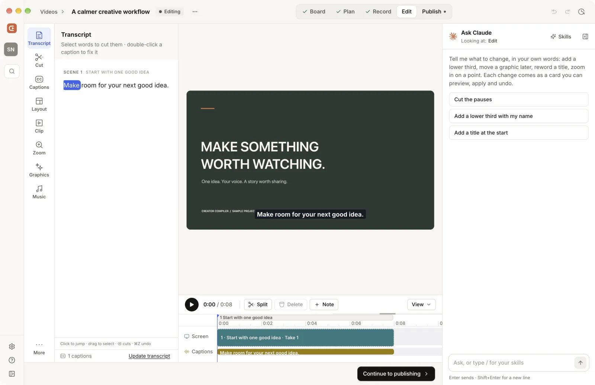
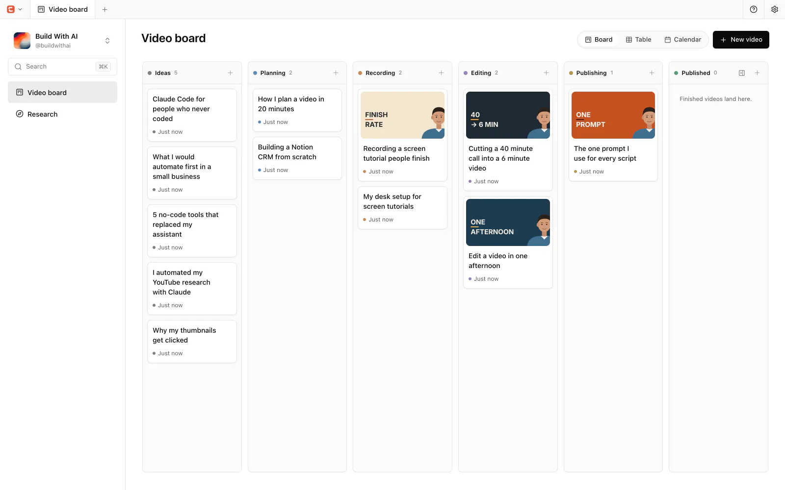
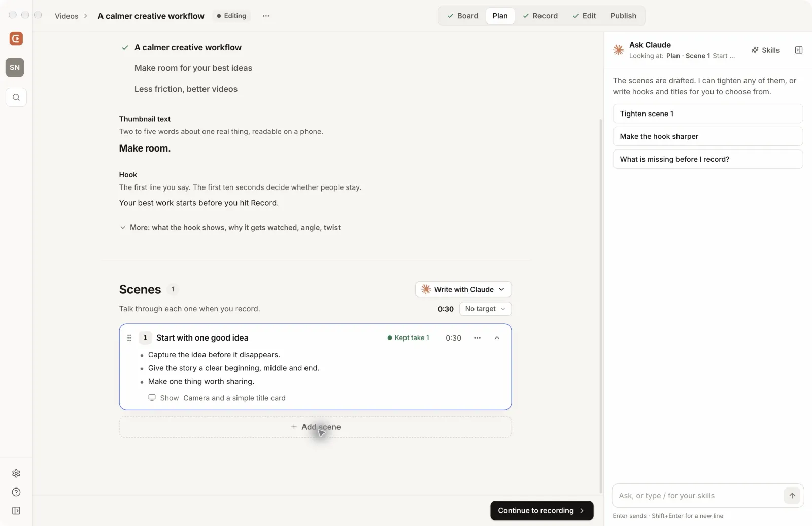
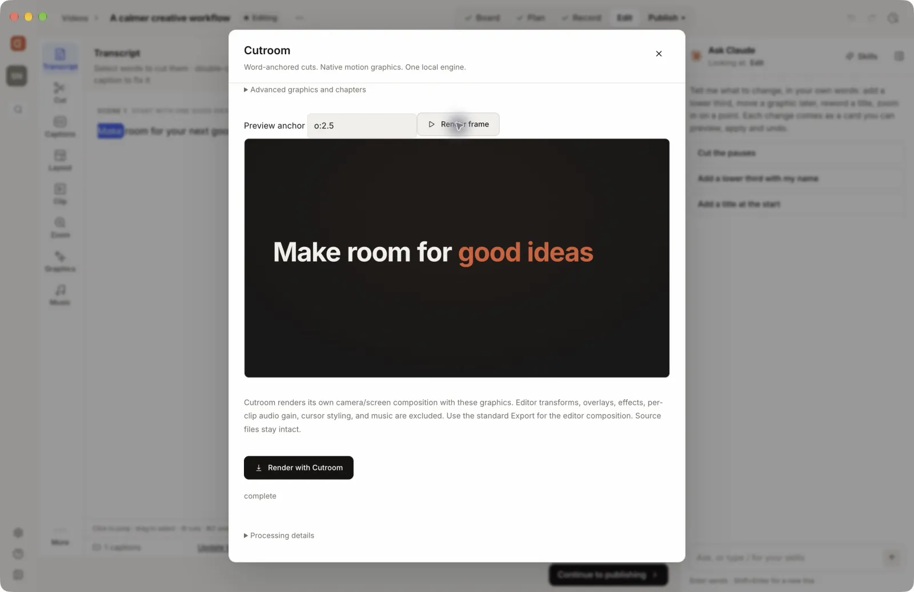
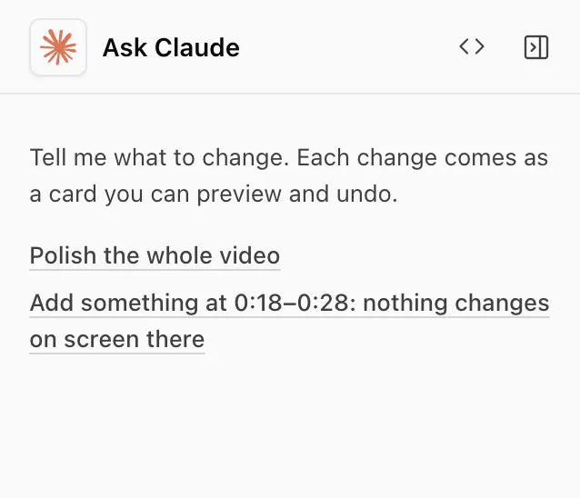

From first thought to final cut
A video studio for your Mac or Windows PC. Plan on a board, write each scene, record your screen and camera, then edit on a timeline while Cutroom cuts the retakes and silences.
For macOS 14 or later on Apple Silicon, and for 64-bit Windows. Free and MIT licensed.

Every stage of a video, in one project
Ideas, scripts, takes and the timeline live together, so the plan you wrote is still there when you sit down to edit.



Record the screen and the camera together
Pick a display, a window or a region, check your sources, and record screen, camera and microphone as separate tracks. Review each take before you keep it.
Put anything behind you
On a Mac, Remove background cuts you out of the camera. Put a colour, a picture, a looping video or your own screen recording behind you, from the camera’s Layout properties.
Let the layout follow what you say
Auto layout reads the transcript and the screen recording. The screen fills the frame while you demo, you fill the frame while you talk, and the whole pass is one change with one Undo.
Tell the editor what to change
Ask Claude sits beside the timeline and uses the Claude Code you already have installed and signed in. Ask it to cut the pauses or add a lower third, and each change comes back as a card you can preview, apply and undo.
Prefer another assistant? Creator Compiler exposes 47 MCP tools, 8 of them for Cutroom, to Claude Code, Codex or any MCP client. The installed app shows the command for your assistant in Settings → AI.
claude mcp add --scope user creator-compiler -- \
node /path/to/creatorclub/scripts/mcp.mjs
Make the next video on your own computer
Projects, recordings and renders stay on your machine. The installers bundle Cutroom, FFmpeg and the fonts, so there is nothing else to set up. Ask Claude uses your own Claude Code sign-in, and only what you send to it leaves your computer.
These are development builds. They are not notarized by Apple or signed with a Windows publisher certificate yet, so your system may ask you to confirm the first launch. You can also run it from source.